![]()
# A tibble: 5 × 8
date_time dateTime dataset_time variable value total_value
<dttm> <date> <time> <chr> <dbl> <dbl>
1 2018-06-10 00:00:00 2018-06-10 00'00" steps 0 7256
2 2018-06-10 00:01:00 2018-06-10 01'00" steps 8 7256
3 2018-06-10 00:02:00 2018-06-10 02'00" steps 0 7256
4 2018-06-10 00:03:00 2018-06-10 03'00" steps 0 7256
5 2018-06-10 00:04:00 2018-06-10 04'00" steps 0 7256
# ℹ 2 more variables: date <date>, time <time>It’s been a bit more than a year since I got a fitbit and I have been pretty excited about tracking my activity and heart rate. I should say I’m quite surprised about the sleep data. Tracking sleep has been, in fact, the most exciting feature, and I now strive to get at least 7 hours of sleep per night.
Let’s first see a glimpse of the data, just to know what type of data we are dealing with.
Density plots
Let’s now inspect the overall distribution for heart rate and step values.
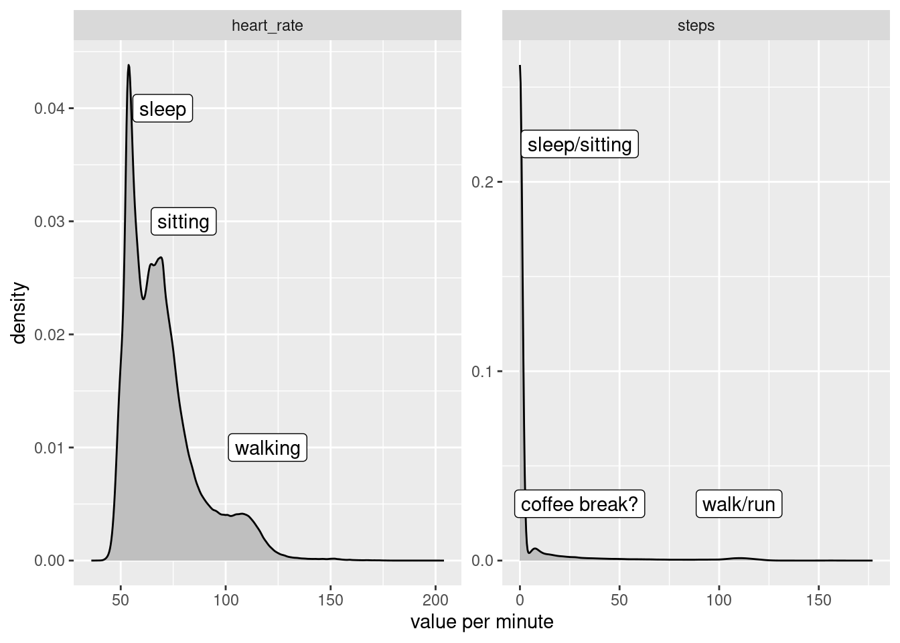
When do I move?
I will start by focusing on the data for steps.
I’m curious to see what times of the day have the most activity. Because I have a quite large amount of data points (~751 K) I will use geom_hex() to count for me and simplify rendering1.
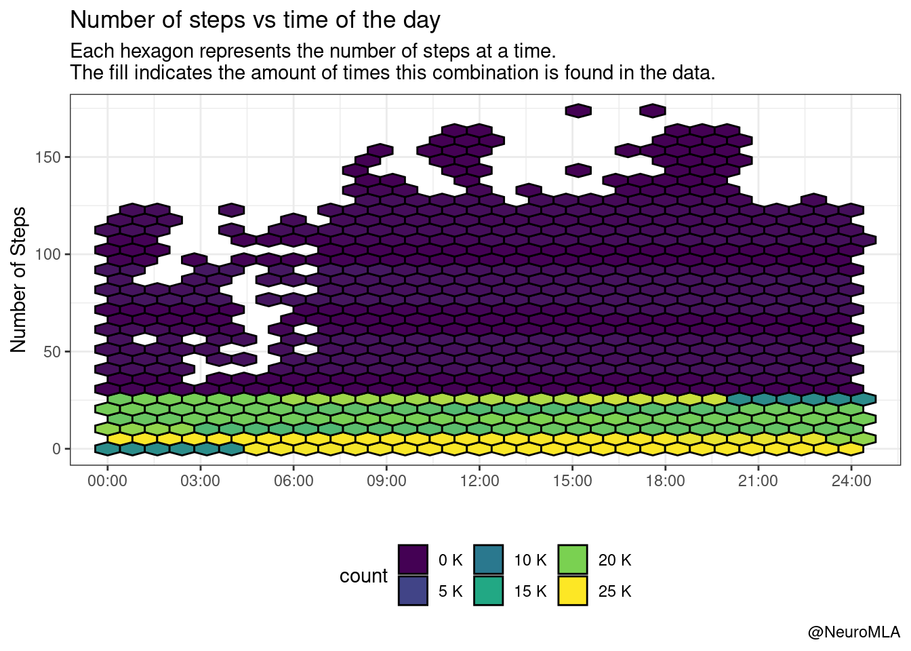
Well, I should have remembered that for the vast majority of minutes (regardless of the hour of the day), the count is exactly zero. Let’s only look at the positive counts:
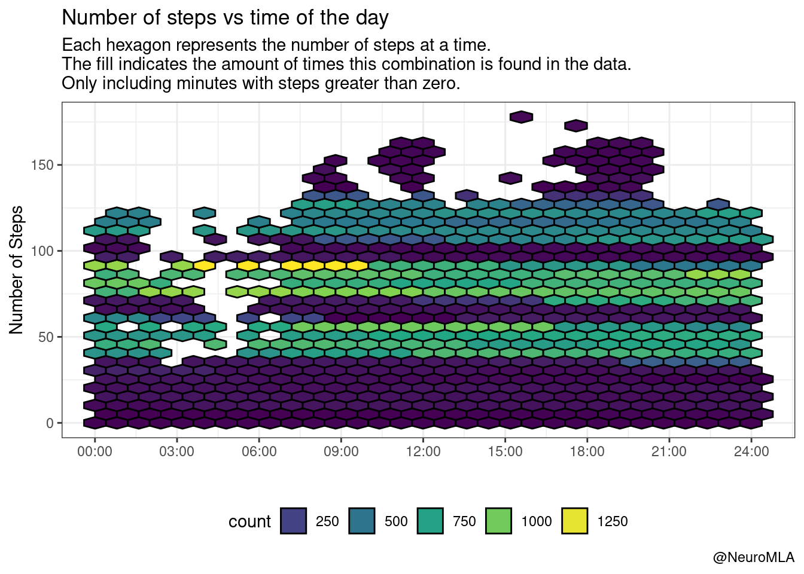
We see now some patches that have high activity (> 100 steps), particularly around 9:00, 12:00 and 18:00. These mostly correspond to “going to work”, “activity around lunch time (?)”, and “going home / physical activity”. For all other cases, it looks like I move around 10-20 steps per minute, regardless of the minute within the hour.
Last 10 minutes
The result above is interesting because I usually have to be reminded by Fitbit to “move up to 250 steps in the hour”. I receive this notification during the last 10 minutes of the hour and I would think that during those 10 minutes I put more steps than during the first 50. The data show I’m wrong:
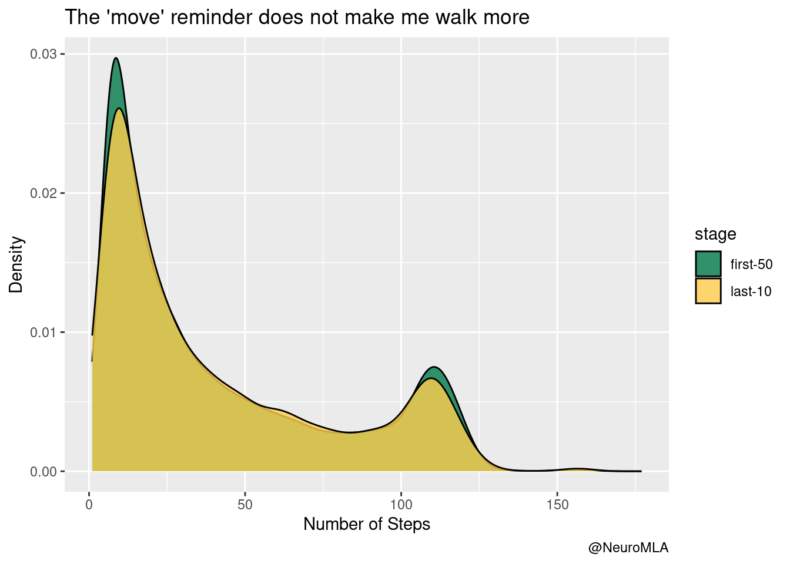
That being said, I want to keep my reminder on. I feel like having it turned on definitely adds ~ 1000-2000 steps per day.
Daily average
Let’s get one level above and aggregate each day as a unit. This plot shows a nice trend, with months from May to August showing an increase on the number of steps. Keep in mind that November will show little average steps because for that month we have incomplete data (last day in database is 2019-11-13),
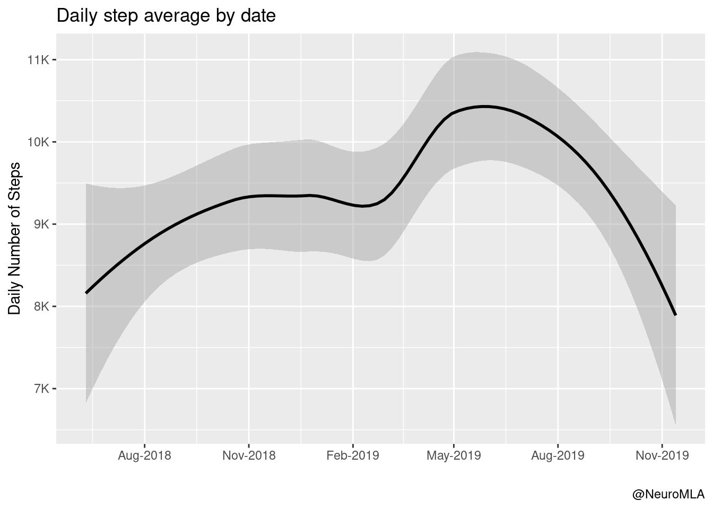
At this part of the analysis, I should make clear that I took vacations from 2019-06-27 to 2019-07-11. We will use this information in the analysis to make some things clear.
Distribution
We looked at the average daily steps for each month, how about the distribution of daily steps? We see that most days I come quite close to the default target of 10K steps. There are some days with very little steps (see below) and, obviously, some days with extreme number of steps.
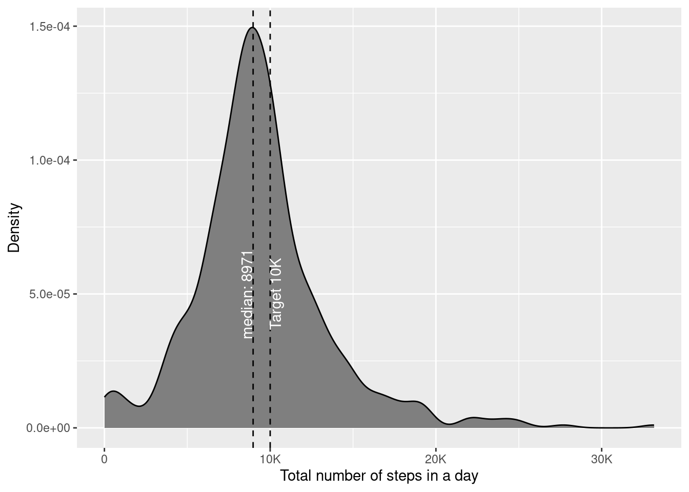
Extreme events
Using the boxplot below, we can define extreme events as instances where I walked more than 20K steps. I chose to plot this by day of the week, to get an insight about periodicity of events.
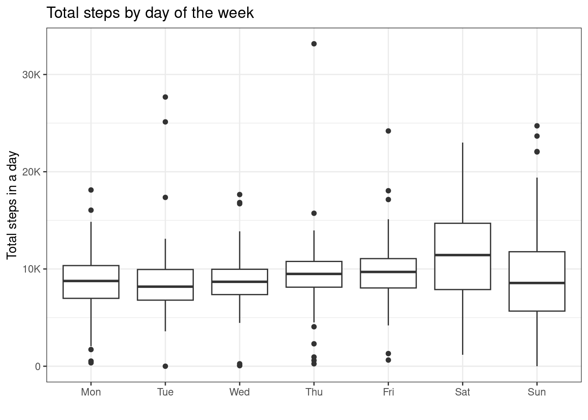
Because I walked a lot during the vacations, I highlighted the days on top of the previous boxplot. Most of the extreme events are definitely during the vacations. Moreover, none of the days I walked less than 10K steps, pretty amazing!
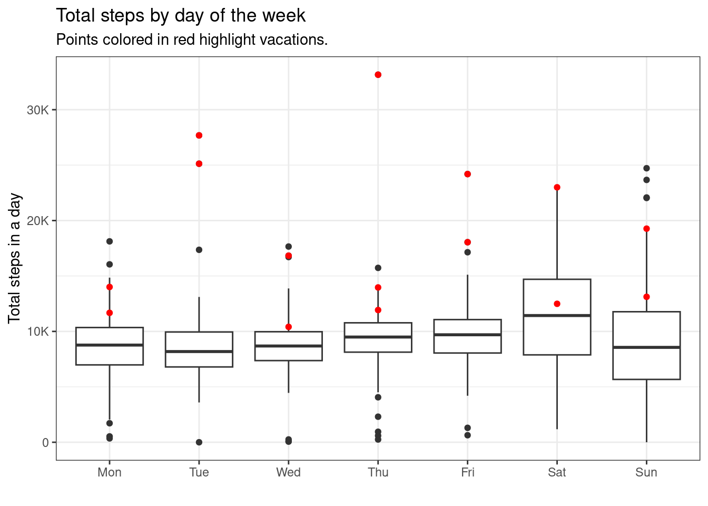
There are some extreme low events, these are quite likely the days I just don’t wear the fitbit (or days I forget to wear it for most of the day). Just because I can order the data and make another plot, I went ahead and did it!
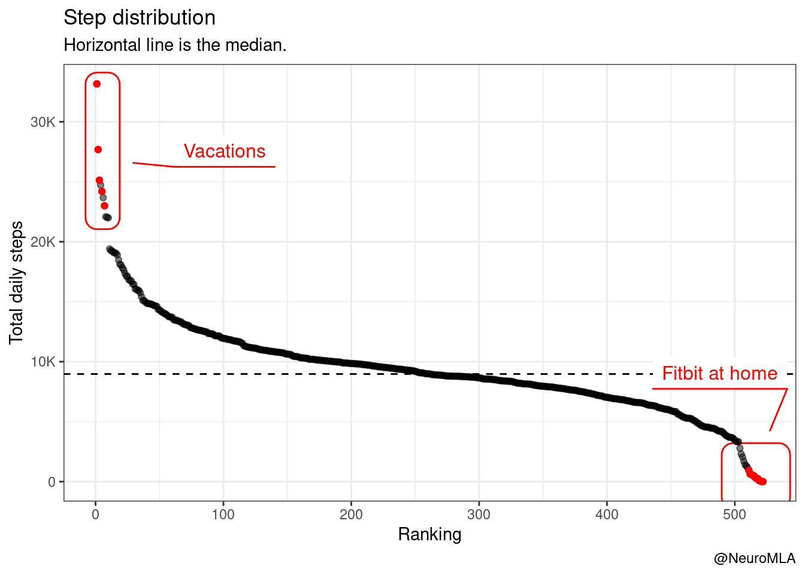
We usually go for walks on Saturdays and/or Sundays. Knowing this little piece of data, it’s quite expected to see Saturdays being the days with higher number of steps (and hence higher success rate on the 10K target).

Season
I want to turn the focus now to the seasonality of the data. I will use a helper function getSeason() that I took from StackOverflow.
We can inspect the effect of season on my walking.

The plot above is not good, it fails to communicate. I think this is a better way to show the data.
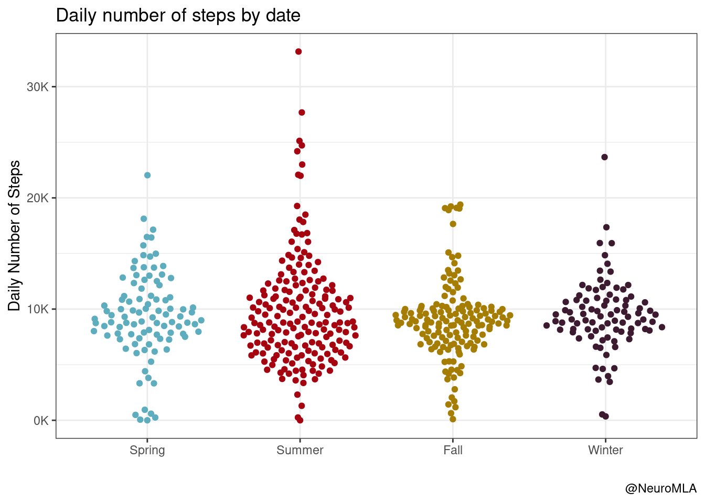
A year’s heart rate in one plot
I’m borrowing heavily from Nick here. But I thought it was a brilliant plot, so I took it for a ride with my data. I actually changed a few things, I decided to keep the native sampling rate and use geom_line() instead of down-sampling and using geom_tile(). The overall trend is clear, movements during the morning and the afternoon that correlate well with going and coming back from work. Somewhere around July 2019 you can see the change in timezone when I took vacations. There are a couple of days in late May with continuously high or lacking values, I take this as one of the days I forgot the fitbit at home, likely spurious measures.
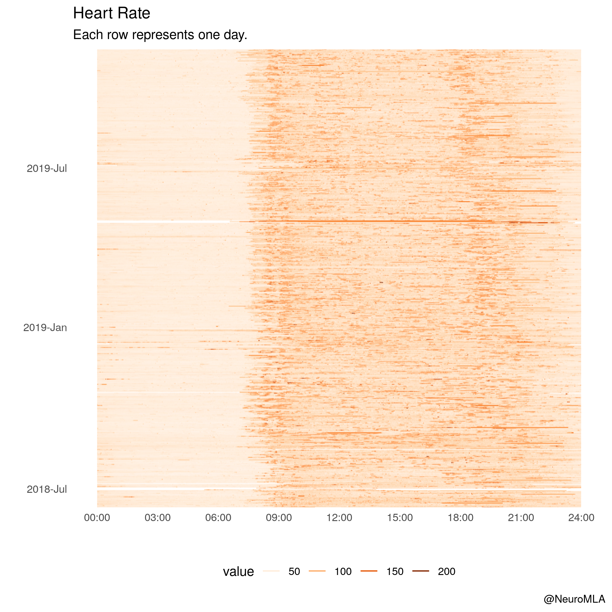
Code
The code for this post is quite long and I thought it would get in the way. I am happy to share upon request, hit me up on Twitter or in the comments below.
Sources
- https://livefreeordichotomize.com/2017/12/27/a-year-as-told-by-fitbit/
Footnotes
Reuse
Citation
BibTeX citation:
@online{andina2019,
author = {Andina, Matias},
title = {Fitbit {Analysis}},
date = {2019-11-22},
url = {https://matiasandina.netlify.app/posts/2019-11-22-fitbit-analysis/},
langid = {en}
}
For attribution, please cite this work as:
Andina, Matias. 2019. “Fitbit Analysis.” November 22, 2019.
https://matiasandina.netlify.app/posts/2019-11-22-fitbit-analysis/.